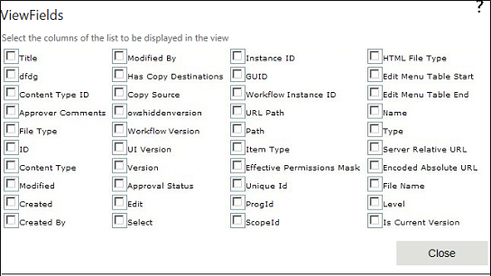

The columns in a view can provide, at a glance, the information that you need for list or library items. This can eliminate the need to open each item to see the item details. Columns, in combination with other features of views, such as filters, can help you see only the information that is most important to your work. This is especially helpful if the list or library contains lots of items.
This property is used to select the required columns of the list to be displayed in the view. Click Close after selecting the required columns. This is a mandatory property.
